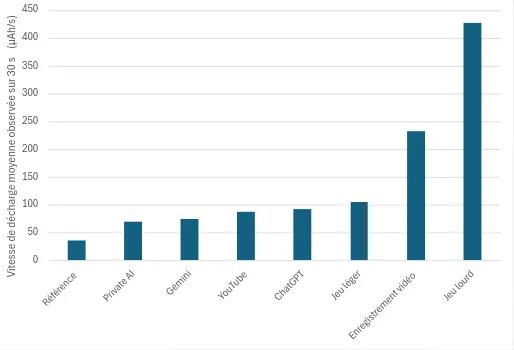
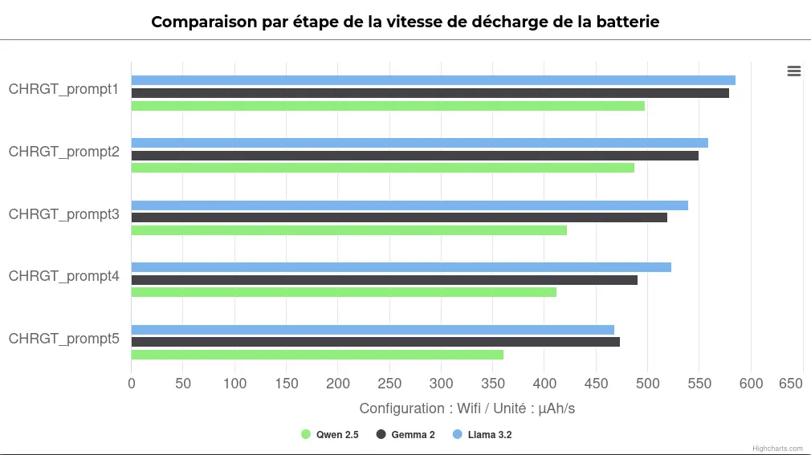
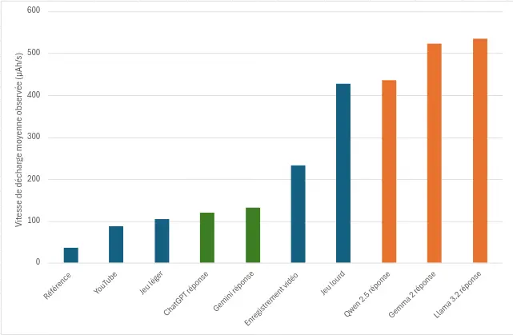

Quels impacts environnementaux pour les IA locales sur nos smartphones ?
Introduction
Imaginez un assistant virtuel capable de rédiger un courriel, traduire un texte ou résoudre une équation complexe, directement depuis votre téléphone, sans jamais envoyer vos données sur internet. C’est la promesse des IA locales comme Apple Intelligence, Gemini Nano ou Galaxy AI. Ces modèles offrent des avantages indéniables en matière de latence et de respect de la vie privée, mais à quel prix ?
Exécuter ces algorithmes directement sur votre appareil exige des ressources matérielles conséquentes et entraîne une consommation énergétique non négligeable. Cette intensité de calcul impacte non seulement l’autonomie de votre batterie, mais aussi la durée de vie du parc de smartphones existants. Faut-il alors s’inquiéter de l’essor des IA locales, plus encore que des IA basées sur serveur ?
Cet article se concentre sur l’impact énergétique des IA locales sur nos smartphones pour un cas d’usage précis. Il sera suivi d’analyses complémentaires sur d’autres usages, comme la génération de texte ou le traitement d’audio et d’image (détection d’objets, segmentation d’image, reconnaissance vocale…).
À l’aide de Greenspector Studio, nous avons mesuré, pour différents grands modèles linguistiques locaux et distants, la durée et l’énergie consommée pour générer une réponse. L’objectif ? Quantifier l’impact réel de ce forcing technologique1 sur nos batteries.
Méthodologie
Contexte de mesure
- Samsung Galaxy S10, Android 12
- Réseau : off pour modèle local / Wi-Fi pour ChatGPT et Gemini
- Luminosité : 50 %
- Tests réalisés sur minimum 5 itérations pour fiabiliser les résultats
- App package IA locale : us.valkon.privateai
- Taille du contexte : 4096 tokens
- Framework : Llama.cpp
- Préférence hardware : CPU
- App package ChatGPT : com.openai.chatgpt
- App package Gemini : com.google.android.apps.bard
Modèles testés en locale (via privateAI) :
- Llama 3.2, Meta, https://huggingface.co/meta-llama/Llama-3.2-1B
- Gemma 2, Google, https://huggingface.co/google/gemma-2-2b
- Qwen 2.5, Alibaba, https://huggingface.co/Qwen/Qwen2.5-7B
Pour chaque test, une nouvelle conversation a été initiée, puis 5 questions (appelées prompt) ont été posées au modèle :
- You’re an expert in digital eco-design. All your answers will be 300 characters long. What are the three fundamental principles for optimizing performance data consumption and energy in Android applications?
- Develop the first principle
- Develop the second principle
- Develop the third principle
- Conclude our exchange
Temps de réponse
L’un des facteurs déterminants pour l’expérience utilisateur est le temps de réponse. En plus de cela, notre smartphone ne pourra pas se mettre en veille, et donc économiser de l’énergie, pendant la génération de la réponse. Nous avons pu mesurer ce temps de génération de réponse, du moment où on envoie le prompt, jusqu’au dernier caractère de la réponse. Voici les résultats obtenus pour les trois modèles étudiés :
Modèles locaux
| Modèles | Nombre de paramètres du modèle | Durée de réponse moyenne (s) | Durée totale de réponse (s) |
| Llama 3.2 | 1,24 milliard | 25,9 | 129,5 |
| Gemma 2 | 2,61 milliards | 37,9 | 189,5 |
| Qwen 2.5 | 7,62 milliards | 54,2 | 271 |
Ces données mettent en évidence une tendance claire : plus le modèle contient de paramètres, plus le temps nécessaire pour générer une réponse est long. Par exemple, le modèle Llama 3.2, avec ses 1,24 milliard de paramètres, offre une réponse en moyenne en 25,9 secondes. En revanche, Qwen 2.5, beaucoup plus volumineux avec 7,62 milliards de paramètres, affiche une durée moyenne de 54,2 secondes, soit plus du double.
Modèles distants
Si les modèles d’intelligence artificielle locaux présentent des avantages notables, notamment en matière de protection de la vie privée, leur rapidité est nettement moins impressionnante lorsqu’on les compare aux modèles déployés sur des serveurs distants :
| Modèles | Durée de réponse moyenne (s) | Durée totale de réponse (s) |
| Gemini | 4,97 | 24,85 |
| ChatGPT | 5,9 | 29,5 |
Les résultats montrent une supériorité évidente des modèles distants en termes de rapidité. Par exemple, ChatGPT, hébergé sur des serveurs optimisés, délivre une réponse en moyenne en seulement 5,9 secondes, soit plus de quatre fois plus rapidement que Llama 3.2, le plus rapide des modèles locaux testés. De son côté, Gemini, avec une durée moyenne de réponse de 4,97 secondes, confirme cette tendance.
Cette différence ne se limite pas au temps de réponse. En plus de solliciter plus longtemps notre appareil, et donc retarder le retour à la veille, l’exécution locale des modèles d’IA impacte également la consommation énergétique des appareils. Ces temps de réponse laissent penser que la génération de réponse place le terminal sous une charge de travail intense, et donc une décharge de batterie élevée. Pour mieux comprendre cet impact, nous avons mesuré la vitesse de décharge de la batterie lors de la réponse des modèles.
Vitesse de décharge de la batterie
Pour référence, un Samsung Galaxy S10, avec la luminosité à 50 %, sans wifi et avec un fond d’écran noir affiché à l’écran, consomme autour de 36 µAh/s. Nous avons mesuré d’autres cas d’usages afin d’avoir des équivalences. Le Galaxy S10 est équipé d’une batterie de 3 400 mAh.
| Vitesse de décharge moyenne observée sur 30 s (µAh/s) | |
| Référence | 36 |
| Application Private AI ouverte, sans interaction | 70 |
| Application Gemini ouverte, sans interaction | 75 |
| Visionnage d’une vidéo sur YouTube sans son (Crabe Rave) | 88 |
| Application ChatGPT ouverte, sans interaction | 92 |
| Jeu léger (Subway Surfers) | 105 |
| Enregistrement vidéo | 233 |
| Jeu lourd (benchmark Wild Life de 3DMARK) | 427 |

Décharge de la Batterie sur un Samsung Galaxy S10 : Comparaison Selon les Usages
On observe ici que l’application ChatGPT est légèrement plus consommatrice que les autres applications d’IA, et est même plus consommatrice que YouTube. Les usages les plus consommateurs sont l’enregistrement vidéo et notre benchmark Wild Life de 3DMARK, qui reflète les jeux mobiles basés sur de courtes périodes d’activité intense, avec une résolution de 2560×1440.
Modèles locaux
L’exécution des modèles d’intelligence artificielle directement sur un smartphone n’est pas seulement une question de rapidité, elle soulève également des questions au sujet de la consommation énergétique. Les tests réalisés montrent que les modèles locaux consomment une quantité non négligeable d’énergie, influençant directement l’autonomie des appareils, et indirectement leur durée de vie. Voici les résultats observés lors de la génération de réponses :
| Modèles | Vitesse de décharge moyenne observée (µAh/s) | Décharge de la batterie (mAh) | Durée totale de réponse (s) |
| Llama 3.2 | 535 | 69,3 | 129,5 |
| Gemma 2 | 522 | 99 | 189,5 |
| Qwen 2.5 | 435 | 118,1 | 271 |
Ces chiffres révèlent une tendance intéressante : bien que le modèle Qwen 2.5 soit le plus gourmand en termes de nombre de paramètres (7,62 milliards), il présente une vitesse de décharge moyenne plus faible (435 µAh/s) que les modèles Llama 3.2 (535 µAh/s) et Gemma 2 (522 µAh/s). Cependant, sa décharge totale de batterie sur un parcours reste la plus élevée avec 118,1 mAh, en raison de la durée de traitement plus longue. Du point de vue de la batterie, utiliser un modèle local est au moins aussi consommateur que faire le benchmark Wild Life de 3DMARK.
Avec sa consommation de référence (terminal allumé, fond d’écran noir, luminosité à 50%, sans Wifi), on estime que la batterie de notre téléphone se décharge totalement en plus de 26h. En utilisant ces modèles, elle se décharge en 2h10 en utilisant Qwen 2.5 (soit environ 143 réponses), ce qui divisera votre autonomie par 12, 1h48 avec Gemma 2 (soit environ 171 réponses), ce qui divisera votre autonomie par plus de 14 et 1h45 avec Llama 3.2 (soit environ 245 réponses), ce qui divisera votre autonomie par 15. L’utilisation d’un grand modèle linguistique en local réduira donc l’autonomie de votre smartphone d’un facteur compris entre 12 et 15.
Lorsqu’on observe les vitesses de décharge des différents prompts on observe que cette dernière diminue au fur et à mesures des prompts. Ici, plusieurs explications sont possibles, telles que des optimisations logicielles ou des limitations matérielles. Toutefois, en l’absence de davantage de mesures, il est difficile d’affirmer avec certitude la cause exacte de ce phénomène. Nous reviendrons sur ces hypothèses dans le prochain article.

Comparaison par Etape de la Vitesse de Décharge de la Batterie pour les Modèles Locaux
Cette forte décharge de la batterie est corrélée avec une très grande utilisation du CPU, comme nous pouvons le voir sur le graphique ci-dessous.

Décharge de la Batterie (blanc) et utilisation du CPU (orange) sur un Samsung Galaxy S10 pour une réponse de Llama 3.2 – Greenspector Atelier de Mesure
Modèles distants
Cet impact sur la batterie est d’autant plus significatif quand on le compare avec des modèles sur le cloud :
| Modèles | Vitesse de décharge moyenne observée (µAh/s) | Décharge de la batterie (mAh) | Durée totale de réponse (s) |
| Gemini | 132 | 3,2 | 24,85 |
| ChatGPT | 120 | 3,3 | 29,5 |
On observe que pour notre parcours, utiliser un modèle distant décharge notre batterie entre 21 et 37 fois moins qu’un modèle local. On pourra alors charger plus de 5170 réponses de Gemini (soit 7h7min) ou 4789 réponses de ChatGPT (soit 7h51min) avec une batterie complète.
En moyenne, nos modèles locaux ont consommé 29 fois plus d’énergie qu’une réponse de ChatGPT.

Décharge de la Batterie sur un Samsung Galaxy S10 : Comparaison Selon les Usages
Le graphique ci-dessus met en évidence une distinction claire entre les modèles d’IA distants (en vert) et les modèles locaux (en orange) en termes de consommation énergétique. Observation surprenante, les modèles distants consomment tout de même plus d’énergie que le visionnage d’une vidéo YouTube ou qu’un jeu léger, alors même qu’ils ne transmettent qu’une faible quantité de données et n’exigent qu’un calcul minimal côté appareil, en dehors de l’affichage progressif du texte. En revanche, les modèles locaux présentent une consommation énergétique nettement supérieure, dépassant celle de tous les autres usages testés, y compris les tâches intensives comme les jeux lourds ou l’enregistrement de vidéos.
Ces résultats soulignent l’impact énergétique important des modèles d’IA exécutés en local sur les smartphones, posant un véritable défi pour l’autonomie des appareils ainsi que la durée de vie de la batterie dans un contexte d’utilisation prolongé et récurent.
Conclusion
Comme nous l’avons démontré, le gain en matière de vie privée offert par les modèles d’IA locaux s’accompagne d’un impact significatif sur la consommation d’énergie, en raison d’une sollicitation intense du CPU de nos smartphones. Conçus pour fonctionner en arrière-plan sans intervention explicite de l’utilisateur (réponses automatiques, résumés de mails, traductions, etc.), ces modèles mobilisent en permanence les ressources de l’appareil, accélérant ainsi la décharge de la batterie. Or, les batteries étant des composants consommables capables d’endurer entre 500 et 1 000 cycles de charge et décharge complètes2, cette surconsommation énergétique entraîne une usure prématurée. À terme, l’impact écologique est notable : remplacement du terminal ou de sa batterie plus fréquent.
Nous avons conscience qu’exécuter un grand modèle linguistique (LLM) en local n’est pas un cas d’usage réaliste à grande échelle. Toutefois, la tendance adoptée par les constructeurs et éditeurs de systèmes d’exploitation nous interpelle. Face aux nouvelles demandes en IA locale, ils cherchent à compenser les limites actuelles en augmentant la puissance de calcul des terminaux avec des accélérateurs dédiés et des batteries de plus grande capacité. Or, les temps de latence observés sur des appareils standards du marché, souvent jugés « inconfortables » pour l’utilisateur final, risquent de précipiter le renouvellement des smartphones vers des modèles plus performants. Une évolution qui pourrait accroître l’impact environnemental lié à la fabrication de nouveaux terminaux.
Nos premières mesures indiquent ainsi que l’intégration des IA locales ne fait que déplacer l’empreinte énergétique des serveurs vers les appareils utilisateurs, avec des conséquences environnementales potentiellement plus lourdes que celles des IA exécutées sur le cloud.
Dans la prochaine partie, nous explorerons les moyens de réduire l’impact énergétique de ces modèles en comparant différentes configurations matérielles (présence d’un accélérateur dédié, optimisation des architectures) et logicielles. Pour les développeurs et fabricants, le défi sera de trouver un équilibre entre puissance, rapidité et efficacité énergétique. L’optimisation des algorithmes, afin de minimiser leur consommation sans compromettre la qualité des réponses, pourrait être la clé pour rendre ces technologies viables à grande échelle.
Alors qu’un Français sur trois considère une batterie déchargée comme une véritable phobie3, sommes-nous prêts à sacrifier notre autonomie, accélérer l’usure de nos batteries ou changer prématurément de smartphone alors que notre appareil est encore fonctionnel – tout cela au nom du confort et de la vie privée ?
Pour aller plus loin …
Pour plus d’informations sur l’IA et son fonctionnement nous vous recommandons https://framamia.org/ . Pour plus d’information sur l’IA frugale nous vous recommandons les ressources disponibles ici : https://ia-frugale.org/